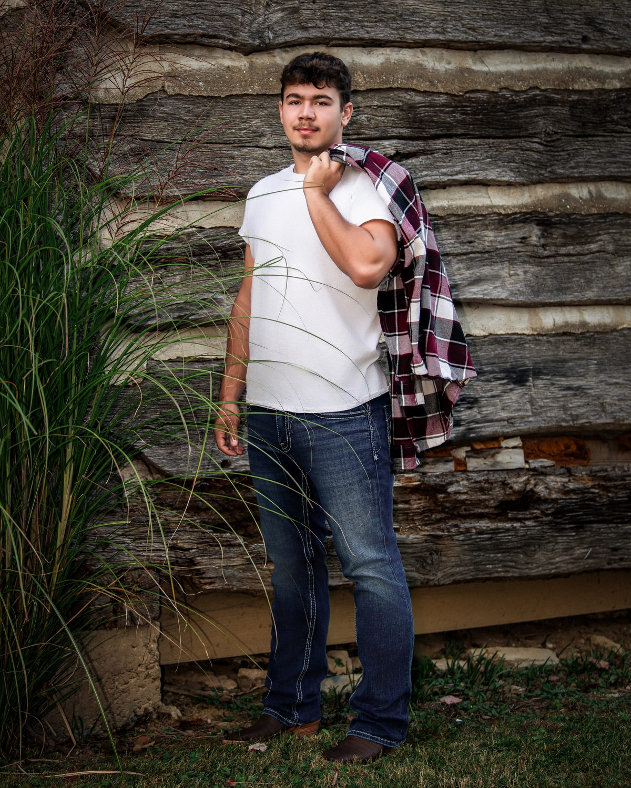

The best family portraits feel coordinated without looking overly planned. Choose a shared color palette, then let each person dress within it.
Different shades, textures, and layers create depth while keeping the finished portrait cohesive. Blackwater can help with final wardrobe decisions before your Portrait Experience.
Each household can choose clothing within the same color family without needing an exact outfit assignment. Pick your colors first, share the link, and let everyone build from there.
Coordinate.
Don't match.
Gone are the days when everyone needs the same white shirt and blue jeans. Instead, choose three to five complementary colors and let each person build an outfit from that palette.
Think of the group as one complete composition. No single person should dramatically stand out unless there is an intentional reason for them to.
For a large family, variety is actually helpful. Different shades and textures keep the portrait from looking uniform while the shared palette ties everyone together.
Send this page to everyone. Let each household dress within the palette.
For a large group, choose a limited family of colors rather than assigning exact outfits. Any of these five palettes will hold a whole family together.
You do not need every color represented equally. These are simply boundaries that allow everyone's clothing to work together. The swatches are guidance for tone, not exact clothing requirements.
If coordinating a large family feels overwhelming, don't choose thirteen outfits at once. Start with one outfit you love, usually Mom, Grandma, or whoever is organizing the portrait.
Pull three to five colors from that outfit. Then build everyone else's clothing around those colors. This creates a natural palette without requiring everyone to shop together.
Everyone should not wear the exact same shade. A strong group portrait contains a mixture of light, medium, and darker tones.
Instead of thirteen people in navy, try a spread like this
This is an example, not a required formula. The purpose is simply visual balance, so no single tone takes over the group.
Texture photographs beautifully and creates dimension without relying on loud patterns. Reach for pieces you can feel.
One or two subtle patterns can help establish the palette. For large groups, avoid having several people wear competing patterns.
A patterned dress or shirt can be the piece that establishes the colors for everyone else.
Nothing here will ruin a portrait. These are simply the pieces that tend to pull the eye away from faces, so set them aside when it is easy to.

Dresses and skirts create movement and photograph beautifully. Midi and full-length dresses are especially flattering for family portraits and create an elegant silhouette.
Dresses are an option, never a requirement. Wear what makes you feel like yourself.
A button-down under a jacket, a sweater over a collar. Layers add dimension and give us more looks to work with in a single session.

Children should be able to sit, stand, walk, play, and be held without parents constantly adjusting their clothing.
A comfortable child will always photograph better than a perfectly styled unhappy child.
Avoid clothing that children clearly dislike wearing. Comfort comes first, every time.
Shoes appear in full-length portraits and should feel intentional.
Avoid highly colorful athletic shoes unless they intentionally belong with the wardrobe.
Understated pieces add a quiet, personal finish.
Accessories should finish an outfit rather than become the first thing someone notices.
Choose three to five colors.
Send the palette and this page to everyone.
Each household chooses outfits within those colors.
Mix light, medium, and dark tones.
Limit strong patterns to a few people.
Do not worry about everyone matching perfectly.
Send Blackwater photographs of the outfits if you need a final opinion.
We want the portrait to feel like your family, not a uniform.

Notice how each person here wears something a little different, yet the group reads as one. Shared colors, varied pieces. That is the whole idea, and it works just as well for four people as it does for twenty.
Before the session, lay everyone's clothing together on a bed or floor and take a quick photograph. It is the fastest way to see the whole group at once.
If everything looks like it belongs in the same room together, you're usually there.
Wardrobe guidance is part of the Blackwater Portrait Experience. If you're unsure between outfits, send us photographs before your session. We'll help you choose what will photograph beautifully and work with the rest of your family.
The goal isn't perfect clothing. It's creating a portrait that still feels like your family years from now.